栃木県小山市城北
今日も、かん八の暖簾を掛けております。
小山市城北の一軒家で、昼はランチの丼とセットを、夜はにぎりと肴をお酒とともにお出ししております。出前・お持ち帰りも承ります。
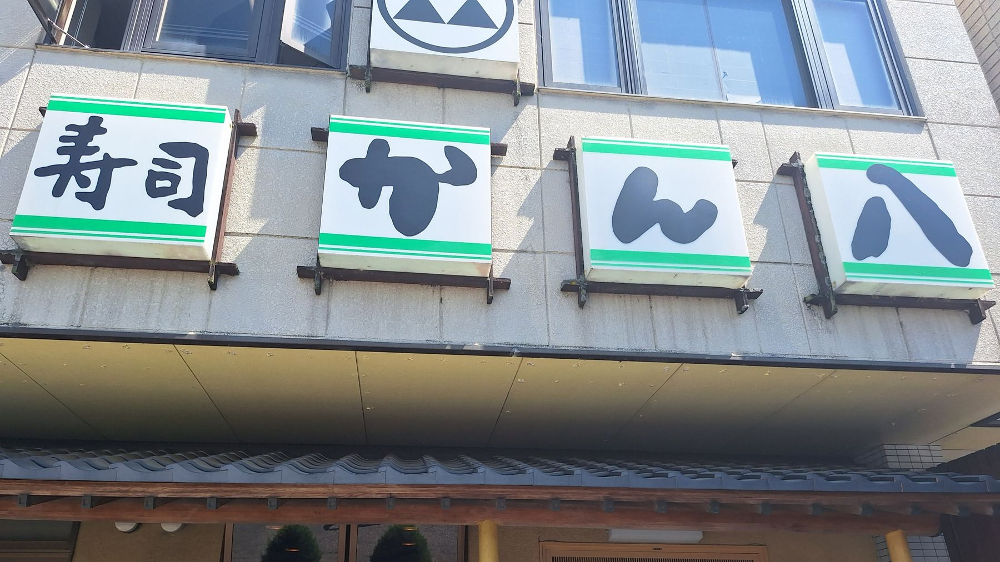
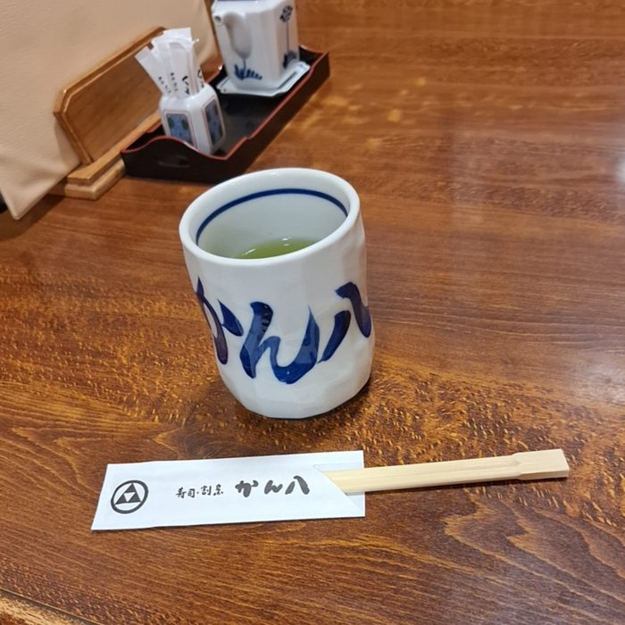
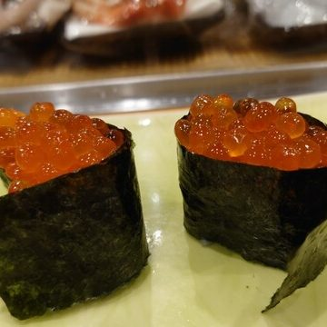
屋号の「かん八」は、魚のカンパチと、末広がりの八を掛けたものです。
この名に丸に三つ鱗の紋を添えて、店の顔にしております。表の四枚看板から、暖簾、提灯、湯呑み、箸袋、器まで、同じ形で通しております。どこでこの紋を目にされても、かん八と分かっていただけるように。
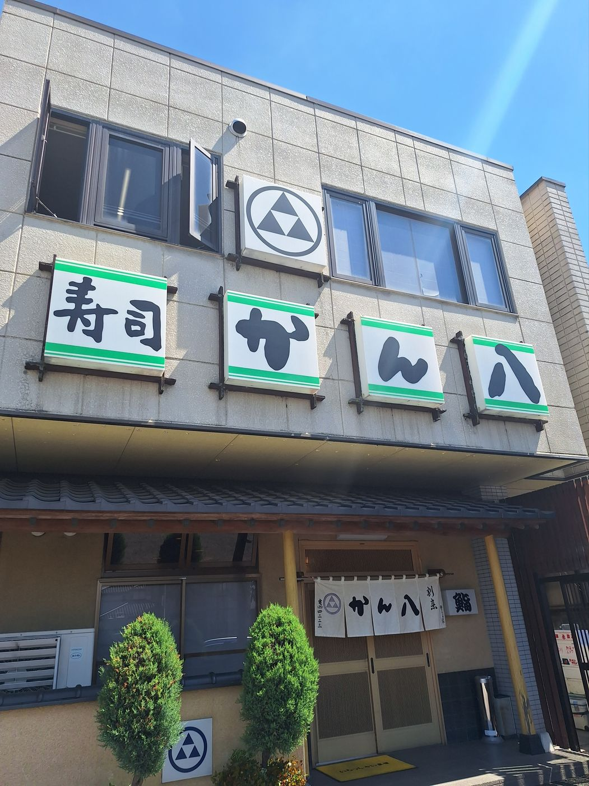
にぎりは、おまかせ、大名寿司、松・竹・梅、まぐろ三昧をご用意しております。
ネタの取り合わせや量は、お好みにより調整いたします。追加のにぎりも承りますので、カウンターでお声がけください。
巻物は一人前二本、太巻は一人前三本でお出しします。
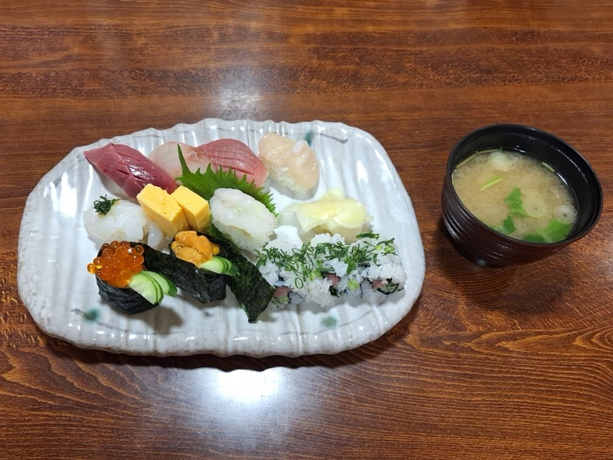
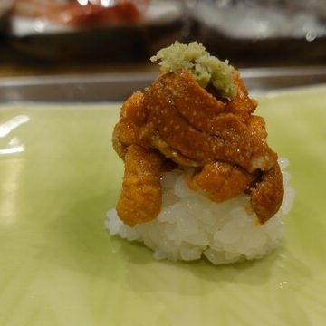
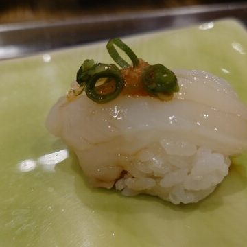
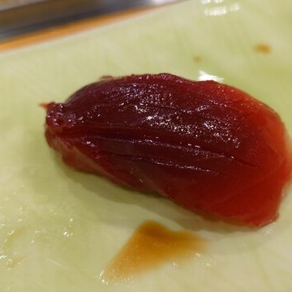
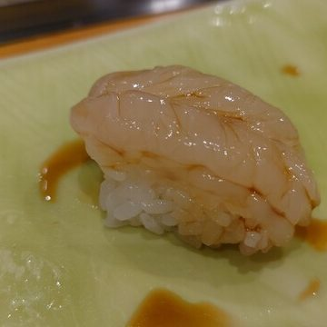
昼は丼を四つ、セットを四つご用意しております。
丼は海鮮丼、かん八丼、鉄火丼、サーモン丼。サーモン丼にはいくらの追加も承ります。
セットはAランチがにぎりと天ぷらと茶わん蒸し、Bランチがにぎりと焼き魚または煮魚と茶わん蒸しです。コーヒーもお付けできます。
「お寿司を作ってみようセット」は、ご自分の手でにぎっていただくセットです。お子様連れも大歓迎です。
旬の素材を使っておりますので、季節により内容が変わることがございます。
お値段は、お電話でお尋ねください。
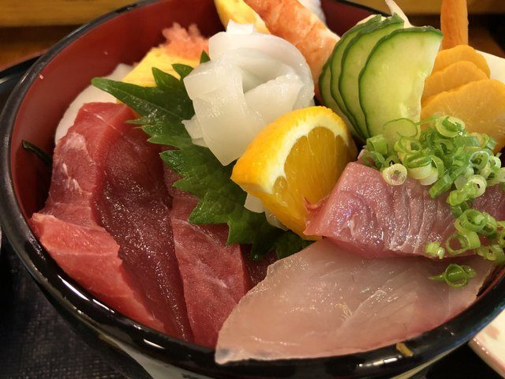
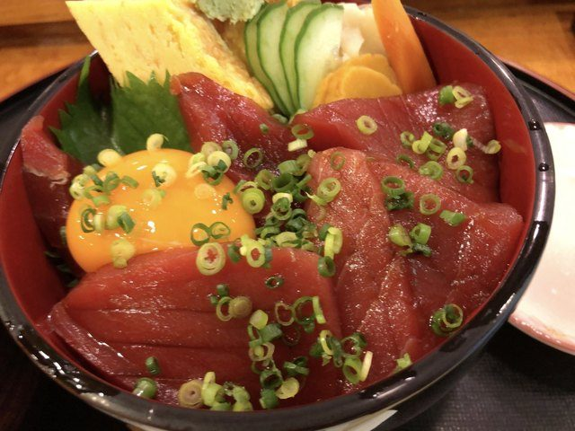
刺身の盛り合わせのほか、揚げもの、焼きもの、天ぷらと、火を通した肴もご用意しております。
屋号のカンパチは、にぎりのほか煮付けでもお出しします。
お通しは、南蛮漬けなど日によって替わります。
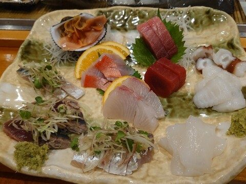
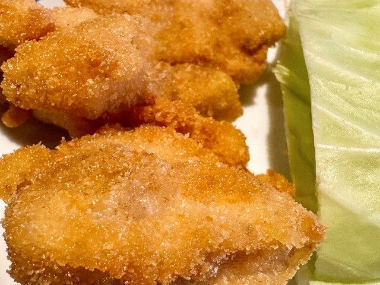
生ビールはザ・プレミアム・モルツを、神泡認定店としてお出ししております。
日本酒は高清水、浦霞、越乃景虎、結城の武勇、八海山を一合でご用意しております。焼酎はボトルでお出しします。
そしてもう二本。長野の大吟醸「かん八」と、大分の麦焼酎「かん八」です。店の名を冠したこの二本は、当店でお召し上がりいただけます。
サワーは国産レモンを使ったかん八レモンサワーを、ハイボールはジムビームから山崎までを揃えております。お子様やお車の方には、瓶のコカ・コーラやノンアルコールビールもございます。
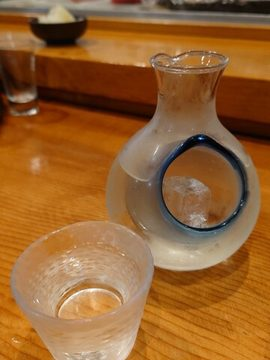
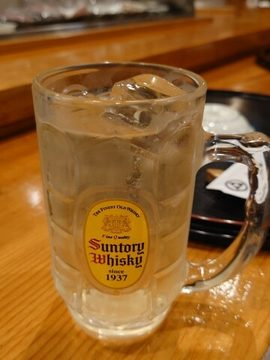
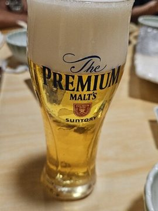
少人数の方はカウンターで、大人数の方は二階の座敷でお迎えします。
二階はご宴会にお使いいただけます。貸切も承りますので、日にちと人数をお電話でご相談ください。
年配の方やお足元がご心配な方がご一緒の場合も、お電話でご相談ください。
ご予約を承ります。
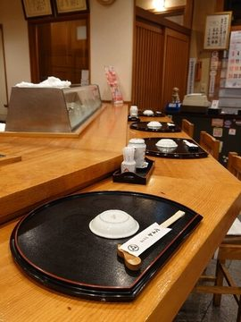
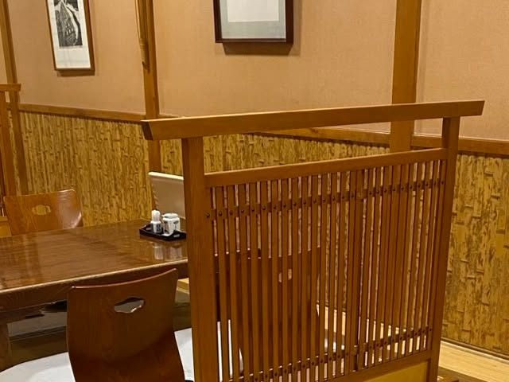
「小山の「かん八」で一杯。新鮮な刺身はネタが厚くて旨み抜群！ お通しも丁寧でしっかり美味しく、最初から満足度高め。落ち着いた雰囲気でゆっくり飲めるのも◎。ついつい杯が進んでしまう、また行きたくなるお店でした！」
食べログ 2026年4月
「ランチに行って、ちらし寿司を食べました♪ 新鮮なネタも種類が多いし、生しらすも入ってました。美味しく頂きました♪♪」
食べログ 2026年8月
「メヒカリ、アンコウの唐揚げ、ホタテバターなど、刺身系以外のツマミがあるのが嬉しいですね。握りのネタはわりと大ぶりで食べでがあります。大将が明るく気さく。家族ぐるみの和やかな応対で気持ち良く飲み食べできるお寿司屋です。」
食べログ 2024年3月
「職員の歓迎会で訪問しました。上司行きつけのお店。今回はコースを注文しました。どれもとってもおいしかったです！ お魚が新鮮！ お刺身も焼き魚も、脂がのってて最高でした。」
食べログ 2024年5月
定休日は月曜日です。祝日の月曜は営業いたします。
昼は12時から、夜は17時からお出ししております。閉店の時刻はお電話でお確かめください。
出前とお持ち帰りも承ります。お電話ください。
クレジットカード（JCB・AMEX・Diners）、電子マネー、QRコード決済をお使いいただけます。
全席禁煙です。
駐車場がございます。店の前のほか、店頭の案内板でお示ししている場所にお停めください。
県道339号線沿いにございます。
お席のご予約、二階の貸切、出前とお持ち帰りは、お電話で承ります。
美味しいお寿司を食べにいらしてください。従業員一同、心よりお待ちしております。